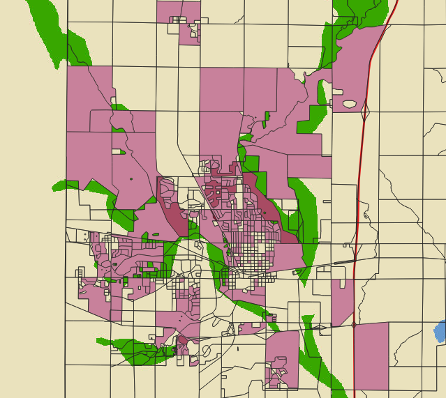
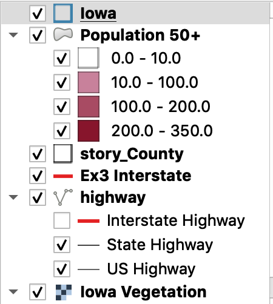

As shown below, the map also compares the vegetation and bodies of water in Ames, IA in comparison to population of 50+ years. It is interesting to see that there is a good amount of elders in both the rural area and towards the center of the city. This means that there is probably a good amount of elder people living on farm land or near vegetation.
 